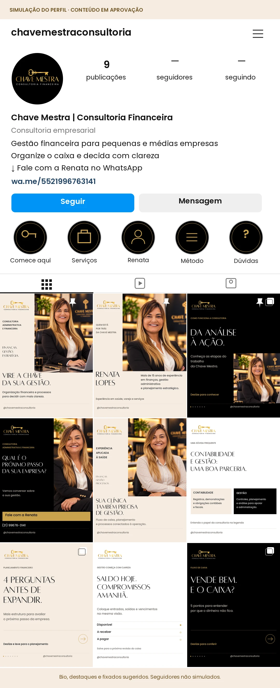

01
Apresentação · Peça única
Vire a chave da sua gestão.
Explicar o que a Chave Mestra faz e para quem.
Chave Mestra em Cena · apresentação de conteúdo
Nove postagens com identidade da Chave Mestra, fotos do acervo da Renata e conteúdo baseado nos serviços da empresa.
Para aprovação da Renata: esta página apresenta a proposta de conteúdo. As artes foram revisadas pelo Jotta e aguardam a sua análise. A simulação do Instagram é ilustrativa. Nenhuma postagem foi publicada nas redes sociais.
Como o perfil pode ficar
A simulação reúne a bio, os destaques sugeridos e as nove postagens. Os três fixados apresentam a consultoria, a Renata e o método de trabalho. O perfil real mantém seu histórico.

Nos carrosséis, deslize a faixa horizontal para revisar todos os cards. Toque em uma imagem para ampliar.
Apresentação · Peça única
Explicar o que a Chave Mestra faz e para quem.
Identificação · Carrossel · 7 cards
Ajudar o empresário a reconhecer pontos que merecem análise no caixa.
Educação · Peça única
Mostrar a utilidade da visão futura do fluxo de caixa.
Autoridade · Peça única
Apresentar a fundadora com fatos públicos confirmados.
Consideração · Carrossel · 7 cards
Relacionar planejamento financeiro a uma decisão concreta de expansão.
Objeção · Peça única
Explicar a complementaridade do serviço com o trabalho contábil.
Especialidade · Peça única
Apresentar a experiência setorial em saúde sem restringir a marca a esse setor.
Método · Carrossel · 7 cards
Reduzir a incerteza sobre o serviço e mostrar as quatro etapas aprovadas no site.
Contato · Peça única
Convidar a uma conversa qualificada com a consultora.
Próximas gravações
Os roteiros estão prontos para gravar. As referências foram analisadas por descrição, capítulos, trechos de transcrição e apresentação. As visualizações são acumuladas e não garantem desempenho.
Baixar os dois roteiros e orientaçõesV01 · 35 segundos estimados · roteiro para gravar
Referência: 4blue. 385.035 visualizações verificadas em 25/11/2026.
Transformar a dúvida sobre caixa em uma demonstração curta com calendário. Usar exemplo próprio, explicitamente hipotético, sem números ou caso de cliente da referência.
| Tempo | Fala da Renata | Texto e imagem |
|---|---|---|
| 0–3 s | Sua empresa vende, mas o dinheiro chega depois das contas? | Vende bem. E o caixa? Renata em plano médio, olhando para a câmera. Começar direto na pergunta. |
| 3–11 s | Pense neste exemplo: você paga um fornecedor hoje e recebe pela venda só no mês que vem. | Exemplo hipotético Pagar hoje → receber depois Corte para calendário simples. Mostrar os dois momentos sem dados de cliente. |
| 11–23 s | Nesse intervalo, folha, aluguel e outras despesas continuam vencendo. Por isso, organize as entradas e saídas pelas datas previstas. | Entradas + saídas + datas Retornar à Renata. Inserir três rótulos curtos, um por vez. |
| 23–29 s | Essa visão ajuda a entender o caixa antes de assumir novos compromissos. | Olhe para os próximos vencimentos Detalhe das mãos marcando o calendário. Nenhum documento real visível. |
| 29–35 s | Quer organizar o financeiro da sua empresa? Fale comigo pelo link da bio. | Renata Lopes WhatsApp no link da bio Plano médio da Renata e assinatura com logo original. |
Aula longa e antiga. O volume acumulado de visualizações não comprova que o formato terá o mesmo desempenho em Reels ou anúncios.
V02 · 35 segundos estimados · roteiro para gravar
Referência: O Primo Rico. 2.686.303 visualizações verificadas em 25/11/2026.
Reduzir a lista a três perguntas concretas para um Reels. Usar fala consultiva da Renata e convite a revisar a rotina. Sem copiar roteiro, bordões ou a promessa do título.
| Tempo | Fala da Renata | Texto e imagem |
|---|---|---|
| 0–3 s | Você sabe o que precisa pagar antes do próximo recebimento? | 3 perguntas para o financeiro Renata diante da câmera, com agenda fechada sobre a mesa. |
| 3–11 s | Primeira pergunta: quais contas já estão previstas para os próximos dias? | 1. O que vai vencer? Corte aproximado. Entrar um rótulo claro, com número e pergunta. |
| 11–19 s | Segunda: quais valores têm recebimento previsto nesse mesmo período? | 2. O que vai entrar? Voltar ao plano médio. Usar gesto natural, sem apontar para valores fictícios. |
| 19–27 s | Terceira: quem atualiza e confere essas informações na sua empresa? | 3. Quem confere? Plano da Renata anotando três perguntas em uma folha preparada para a gravação. |
| 27–35 s | Essas respostas ajudam a organizar a rotina. Salve para a próxima revisão com a sua equipe. | Salve para revisar com a equipe Fechar com Renata em plano médio e marca discreta. Um único convite final. |
Canal de alcance amplo, com base de inscritos muito maior que a Chave Mestra. Visualizações acumuladas não equivalem a conversão. Estatísticas e orientações financeiras do vídeo antigo não foram reproduzidas.
Os posts 01, 07 e 09 têm sugestões de texto comercial. Orçamento, público, campanha e medição serão definidos antes da veiculação.
Organização financeira e processos para a realidade da sua empresa. Conheça a consultoria administrativa e financeira da Chave Mestra e converse com a Renata.
Título: Conheça a Chave Mestra
Descrição: Finanças, gestão e estratégia.
Gestão financeira e administrativa com experiência no setor de saúde. Conheça a Chave Mestra e converse sobre os desafios da sua clínica.
Título: Converse sobre sua clínica
Descrição: Planejamento e processos para a operação.
O próximo passo da sua empresa começa com informações mais claras. Converse com a Renata sobre organização financeira, planejamento e processos.
Título: Fale com a Renata
Descrição: Entenda como funciona a consultoria.